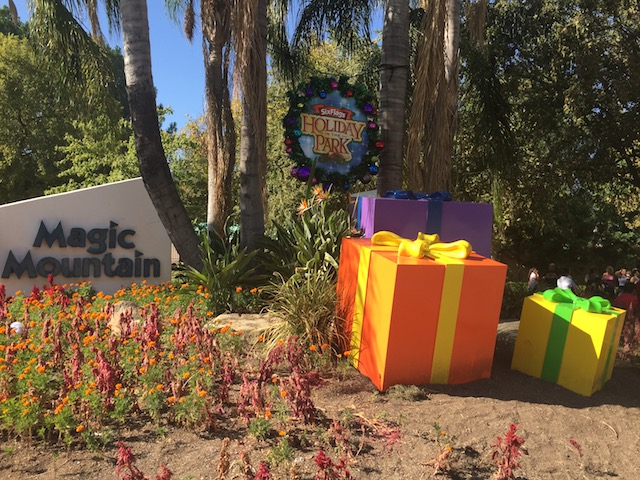
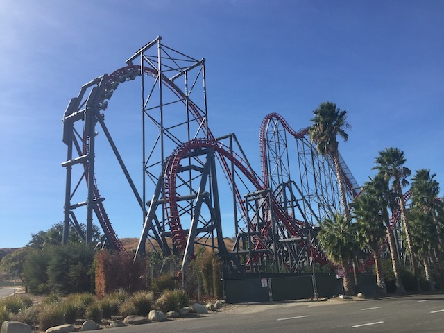
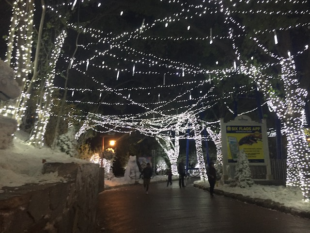

| |
Incrediblecoasters Winter 2017
Six Flags Magic Mountain Disneyland Resort

All right. Time for another update. Yep. It's time to do our Christmas updates. We're starting out at Six Flags Magic Mountain...except...this day wasn't meant to be an update. If you're wondering why I'm recycling the Holiday in the Park photo I used for my Fall 2017 Photos update. It's beause...this was never meant to be an update. You see, the original plan was to go to Six Flags Magic Mountain in December for Holiday in the Park. However, I never made it to SFMM in December. Then how the hell is there a SFMM Update in the Christmas update? Simple. Because I did go to Six Flags Magic Mountain in late November, and I did go to Holiday in the Park then. However, I mainly did it because A: Killing time and B: I wanted to do an insurance round of photos for Holiday in the Park, in case my camera died when I went in December and needed some backup stock photos, I could use the November ones. However, that December visit never came, and I had a lot of really good Holiday in the Park photos, that I just couldn't not share. Plus, that November visit that was never intended as an update was a lot of fun, and worth talking about. So why did that December Holiday in the Park visit not happen?
Southern California Wildfires. OK. That may not have been the only reason, but it was the dominant reason. Now if you've read the site over the years, you'll know that we've talked about wildfires in several past updates, and you'll notice that we didn't take them seriously. But this was the first time that the Wildfires didn't just feel like a nusiance where you just roll your eyes and say "Oh. There goes those wildfires again." This was the first time it really felt like a threat. For instane, the Rye Fire was fairly bad and was very close to Six Flags Magic Mountain. Much bigger than any of those fires I talked about in past updates (which is partially why I rolled my eyes at wildfires until this). But even that was nothing thanks to the Thomas Fire. It was not only the biggest of these December So-Cal Wildfires, but the biggest wildfire in California history. And considering the photo shown was taken right outside my house with the Thomas Fire at it's worst, I got the hell out of there and the areas where the most houses burned are pretty much just a mile away from me (Acquaintances of mine lost their homes). So briefly thinking that your house and all your sh*t could very well be gone (Thank god my house, and my entire neighborhood surivived with no damage at all) will definetly make you forget about all other plans that you had. And by the time all that was done, I was busy with sh*t to do, and just never found the time.
 OK. That's enough depressing wildfire talk. Back to rollercoasters, silliness, and fun! Anyways, a Batman marathon sounds good. Got several rides in, and even made a new roller coaster friend. =)
OK. That's enough depressing wildfire talk. Back to rollercoasters, silliness, and fun! Anyways, a Batman marathon sounds good. Got several rides in, and even made a new roller coaster friend. =)
Hey! Wanna buy a video of you acting like a jackass on Batman!?
*Sigh* God damn it. I've never been a fan of the hill you have to walk down to get to the Wendys. But with no sidewalk...yeah. F*ck that. Well, at least all the trash I complained about is being cleaned up.

I don't care how often I come to SFMM, how many times I've ridden this ride, or how tired I am of the park. X2 will still be a favorite of mine.
 *sniff* Why doesn't anyone want to high-five me? ='(
*sniff* Why doesn't anyone want to high-five me? ='(
All right. The whole reason I shoestringed this SFMM update. Holiday in the Park. Let's go over that now.
♫I'm dreaming of a Steampunk Christmas.♫
Hmm. No red nose. Why isn't Rudolph in these reindeer games? NOSE DISCRIMINATION!!!
Ooh! See a tree! Must paint it with pretty blue lights!
OK. I heard a ton of good things about this show and was planning on seeing it when I did that December Holiday in the Park visit. But...you know how that turned out.
I must admit. I did really like the outdoor projection show they did on the wall. So hopefully Kwerkmas is much better. Well, we'll see for Holiday in the Park 2018.
I know I've made the "Look at the pretty colors!" remark a lot. But seriously. I love how colorful this all is.

I know I've praised Holiday in the Park repeatedly for the past few years, and I can't help it! It's probably my favorite thing that Six Flags Magic Mountain does each year.
Let me at the trees. I bet I can make that a candy cane. ;)
 Even with all the pretty lights, we still are IncredibleCOASTERS. So here's Viper for you. It had no line and was running really well.
Even with all the pretty lights, we still are IncredibleCOASTERS. So here's Viper for you. It had no line and was running really well.
My polar bear friend and I would like to wish all you bitches Happy Holidays. Now give us some Cokes. =)
Ho ho ho! I'm a reindeer! And I can talk! Give me...I dunno...a Coke I guess, since that's what Kevin and the Polar Bear demanded and I'm just an unoriginal reindeer.
And here's Tatsu for among all the lights for you. Holiday in the Park was really good and hopefully I'll have more time to check it out next year.
Disneyland Resort
Home
|